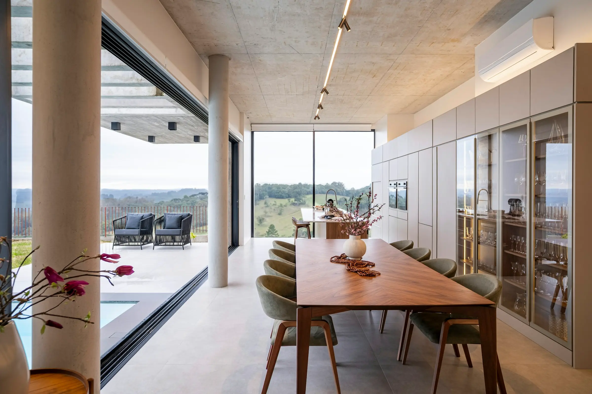
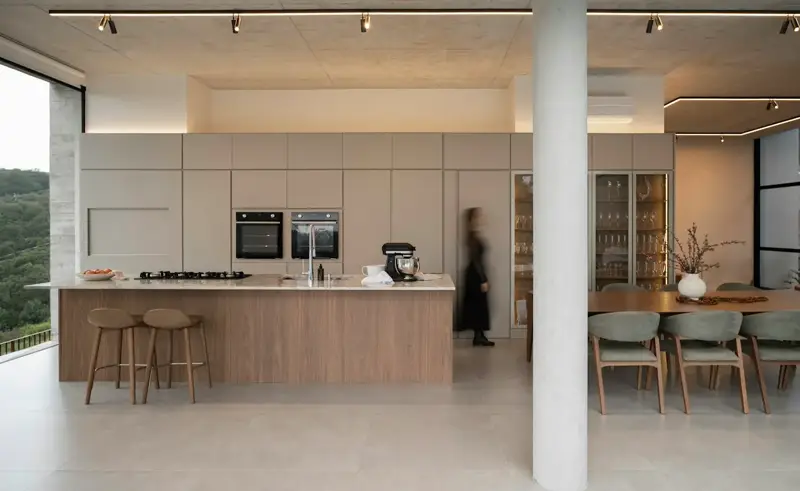
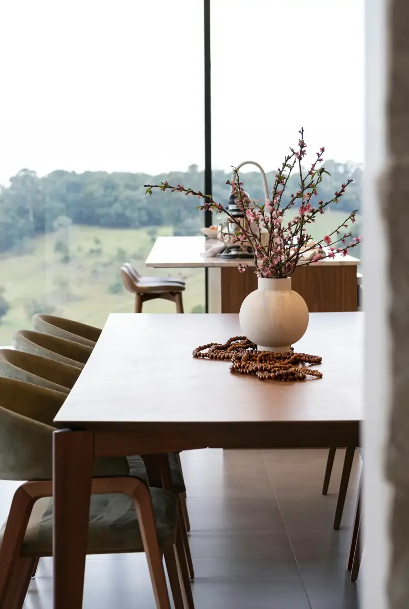
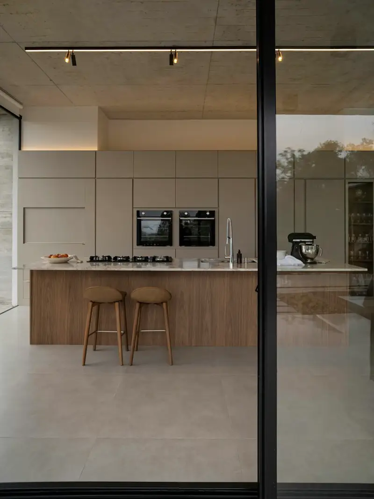
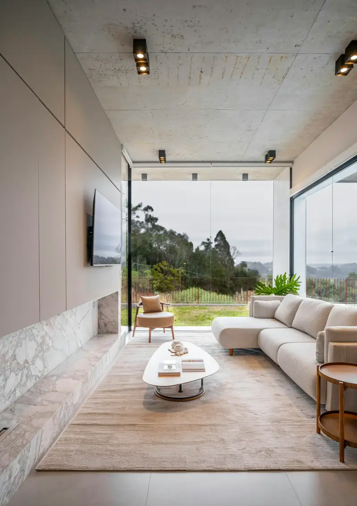
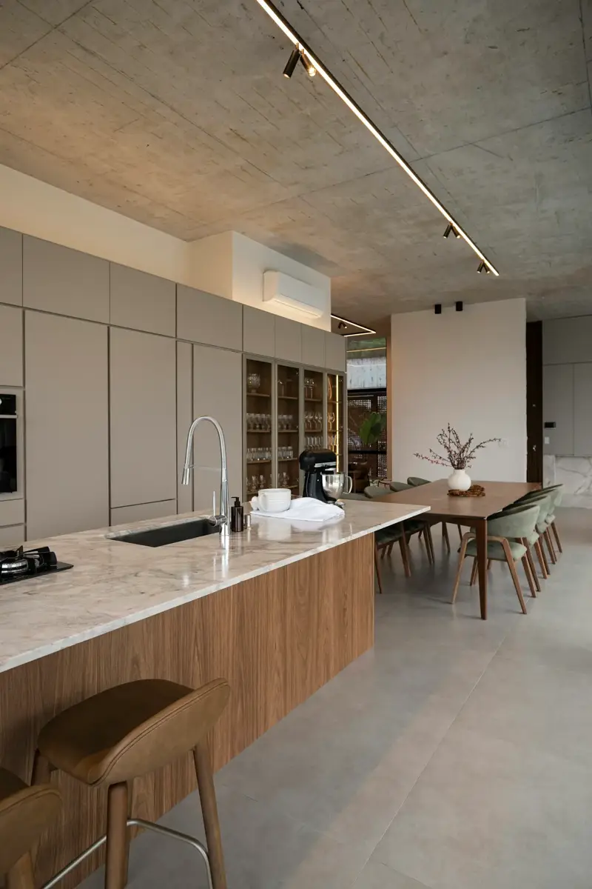

Empreendimentos / Jardins do Vale

Em obras
Jardins do Vale
Dezoito casas térreas ao longo de uma rua curva, com as salas abertas para o vale e as árvores do terreno no lugar onde estavam.
- Terrenos
- 600 a 820 m²
- Casas
- 18 térreas, com 4 suítes
- Área preservada
- 42% do terreno
- Entrega prevista
- Jun. 2028
Empreendimento fictício As fotos desta página mostram uma casa real usada como referência de padrão. Foto: Caroline Badran / Unsplash
Implantação
As casas se alternam em profundidade para que nenhuma janela fique de frente para a do vizinho, e todas as salas olham para o vale. Selecione uma casa para ver os dados.
Nenhuma casa selecionada.
Arraste a implantação para os lados para ver todas as casas.
Um dia na casa




Salas que abrem por inteiro
Panos de vidro de piso a teto e esquadrias embutidas deixam a sala e o terraço no mesmo nível, sem trilho aparente no piso.

Concreto, pedra e madeira
Teto em concreto aparente, ilha em pedra natural e marcenaria em madeira clara. Poucos materiais, repetidos em todas as casas.